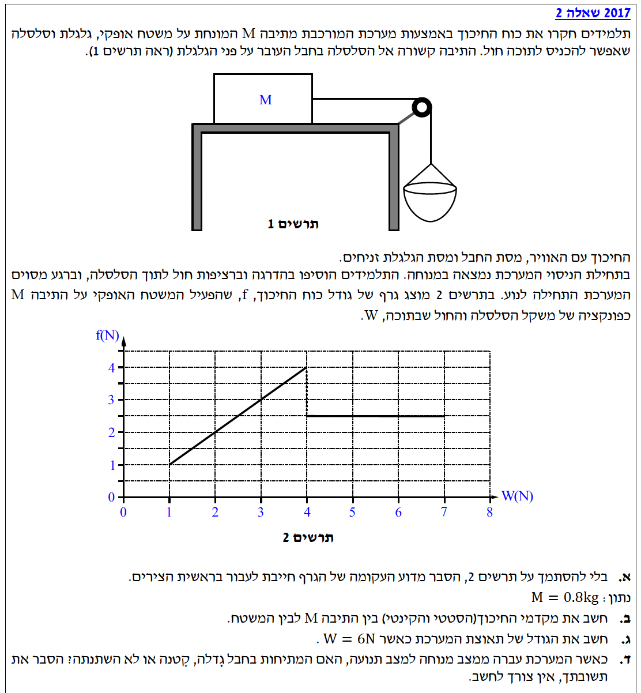
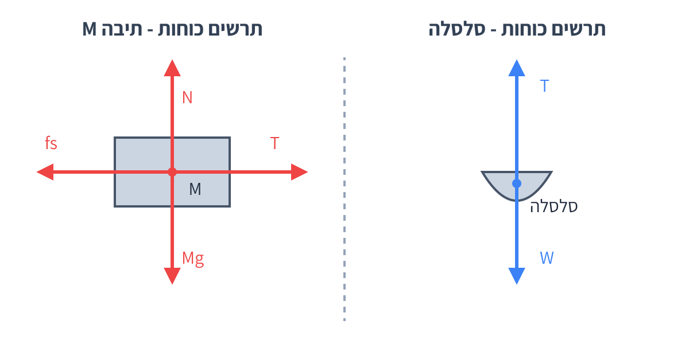
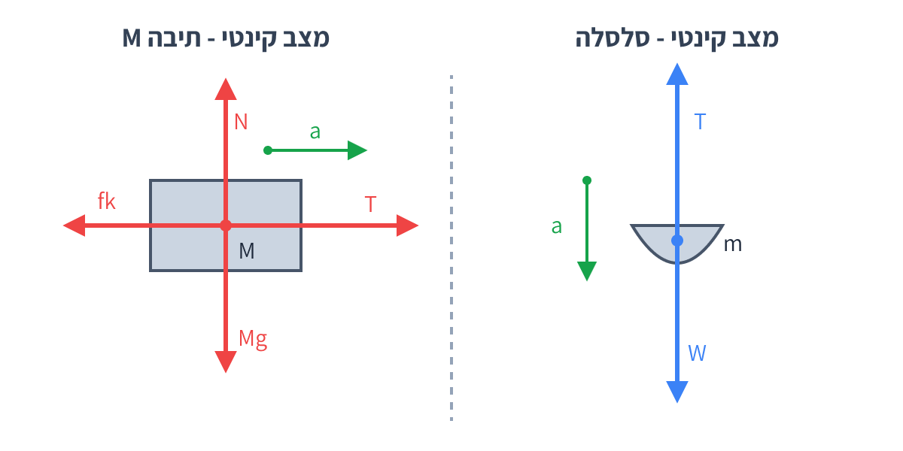

מציאת מקדמי חיכוך, תאוצה וניתוח כוחות של מערכת גופים מחוברים תוך שימוש בגרף
בשאלה זו אנו חוקרים מערכת של שני גופים המחוברים בחוט. הייחוד כאן הוא שאנו מוסיפים מסה בהדרגה לאחד הגופים (הסלסלה), מה שגורם למערכת לעבור ממצב של מנוחה (חיכוך סטטי) למצב של תנועה (חיכוך קינטי).
ננתח את המערכת שלב אחר שלב באמצעות החוקים של ניוטון והגרף הנתון. בהצלחה!

כדי להבין את הקשר בין כוח החיכוך \( f \) למשקל הסלסלה \( W \), נצייר תרשים כוחות עבור כל גוף בנפרד כאשר המערכת במנוחה.

נרשום את משוואות הכוחות (החוק הראשון של ניוטון) עבור כל גוף כשהמערכת במנוחה.
עבור הסלסלה בציר האנכי:
עבור התיבה \( M \) בציר האופקי:
נציב את המתיחות \( T \) מהמשוואה הראשונה למשוואה השנייה ונקבל:
משוואה זו היא פונקציה ליניארית מהצורה \( y = mx + b \), כאשר כאן \( y = f_s \), \( x = W \), השיפוע הוא \( m = 1 \), ונקודת החיתוך עם ציר ה-y היא \( b = 0 \).
מסקנה: מכיוון שהקשר הוא \( f_s = W \), זוהי משוואת ישר העוברת בראשית הצירים (כאשר אין משקל לסלסלה, כלומר \( W=0 \), גם כוח החיכוך הסטטי הוא אפס כי התיבה לא "מנסה" לזוז).
תחילה, נחשב את הכוח הנורמלי \( N \) הפועל על התיבה \( M \). על פי תרשים הכוחות מציר y (אנכי) של התיבה:
על פי דף הנוסחאות, כוח החיכוך הסטטי מקיים \( f_s \le \mu_s N \). כוח זה מגיע לערכו המקסימלי בנקודת השוויון. נשתמש בערך המקסימלי שזיהינו מהגרף: \( f_{s,max} = 4\text{ N} \).
נשתמש בערך הקבוע מהגרף בזמן תנועה: \( f_k = 2.5\text{ N} \).
מסקנה: מקדם החיכוך הסטטי \( \mu_s = 0.500 \), מקדם החיכוך הקינטי \( \mu_k = 0.313 \).
המשקל \( W \) הוא כוח הכובד הפועל על הסלסלה. נסמן את מסת הסלסלה באות \( m \).
נגדיר מערכת צירים לכל גוף, כך שכיוון התנועה החיובי מתלכד עם כיוון התאוצה:

נבנה משוואה עבור כל גוף בנפרד, בכיוון התנועה שלו:
משוואה (1) עבור התיבה \( M \):
משוואה (2) עבור הסלסלה \( m \):
נחבר את שתי המשוואות יחד. נשים לב שהמתיחות \( T \) מתבטלת, משום שהיא פועלת ככוח פנימי במערכת הכוללת:
נציב את הערכים הידועים (\( W = 6\text{ N} \), \( f_k = 2.5\text{ N} \), \( M = 0.8\text{ kg} \), \( m = 0.6\text{ kg} \)):
מסקנה: גודל תאוצת המערכת הוא \( a = 2.50\text{ m/s}^2 \).
כדי לענות על השאלה, נתמקד בסלסלה, שכן קל יותר לנתח את הכוחות הפועלים עליה (רק מתיחות וכוח כובד).
הסלסלה אינה מאיצה (\( a = 0 \)). לכן, סכום הכוחות עליה שווה לאפס. המתיחות שווה בדיוק למשקל הסלסלה והחול:
ברגע שהחיכוך הסטטי נשבר (והופך לחיכוך קינטי חלש יותר), המערכת מתחילה להאיץ. הסלסלה מאיצה כלפי מטה. משמעות הדבר לפי החוק השני של ניוטון היא שסכום הכוחות הפועלים על הסלסלה חייב להיות בכיוון מטה (כלומר, המשקל מנצח את המתיחות):
נבודד את המתיחות במצב תנועה:
מכיוון שהביטוי \( m a \) הוא חיובי (יש למערכת מסה ויש לה תאוצה), ברור כי \( W - m a \) קטן יותר מ- \( W \). כלומר:
מסקנה: כאשר המערכת עברה למצב תנועה, המתיחות בחבל קטנה.